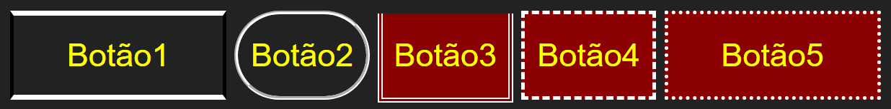
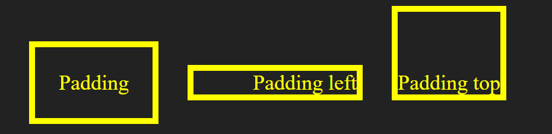

O CSS, Cascading Style Sheets, ou Folhas de Estilo em Cascata é o que define a aparência de elementos HTML, transições, animações e efeitos. Pode atuar em conjunto com o Javascritp, sozinho e até mesmo ser manipulado pelo Javascritp.
Esta sessão é apenas uma introdução ao CSS teremos um capítulo inteiro cobrindo a maioria dos conceitos deste assunto, e mais um capítulo sobre Web Design Responsivo onde o uso de CSS será intenso.
Existem três formas de estilizar um documento:
1. Utilizando CSS: in-line (em linha). Com o atributo style na tag de abertura de um elemento.
2. Interno. Definindo os estilos dentro de uma tag style.
3. Externo. Num arquivo com extensão .css importado no documento HTML.
O CSS in-line é o que já vínhamos utilizando, e é definido assim:
<p style="color: black; background-color: gray;">Oi!</p>
O atributo style define um estilo CSS em linha.
A segunda maneira de se utilizar folhas de estilo é interna no próprio arquivo, para tanto, devemos escrever nossos estilos dentro de uma tag <style>, assim:
<p>
Meu parágrafo
</p>
<style>
p {
color: white; background-color: brown;
}
</style>
Neste exemplo estamos alterando a cor do texto e do fundo de todos os parágrafos que utilizam a tag <p> no documento. Esta maneira de definir estilos é muito prática e nos ajuda a alterar a aparência de vários elementos ao mesmo tempo.
No entanto, adicionar muito código CSS em arquivos que já são grandes não é uma boa ideia, nessa situação podemos utilizar um arquivo .css externo, definindo seu caminho com um elemento <link>.
Considere o seguinte arquivo HTML:
Arquivo index.html:
<!DOCTYPE html> <html lang="pt-BR"> <link rel="stylesheet" href="index.css"><body>
<h1>Título</h1>
<p>Parágrafo</p>
</body>
</html>
Neste documento temos a tag <link>, utilizada para inserir referências a arquivos externos, com o atributo href, onde passamos o caminho do arquivo CSS que queremos utilizar, o atributo rel é responsável por indicar ao navegador o tipo de arquivo que estamos importando. Logo abaixo temos um título e um parágrafo, que vamos estilizar com o código do nosso segundo arquivo, que deve estar na mesma pasta e se chamar index.css:
Arquivo index.css
p {
color: white;
background-color: brown;
padding: 20px;
}
* {
background-color: #222;
color: aliceblue;
font-size: xx-large;
font-weight: bolder;
}
No exemplo acima, alteramos o estilo de todos os parágrafos, e utilizamos um caractere curinga * para alterar a cor de texto, de fundo e a fonte de todos os elementos do documento. Veremos mais sobre o caractere curinga no momento específico.
Quando desejamos aplicar um estilo personalizado a apenas um elemento e não a todos os elementos de uma tag específica, podemos utilizar classes e ids por meio de atributos:
<p id="p1">Parágrafo com id</p> <p class="p2">Parágrafo com classe</p>
O seletor CSS para classes e para ids são diferentes, selecionamos um objeto por sua classe utilizando o ponto, e pela id utilizando a cerquilha:
#p1{
color: white; background-color: brown;
}
.p2{
color: black; background-color: yellow;
}
Neste exemplo, o primeiro estilo é aplicado ao parágrafo com a id “p1”, e o segundo ao parágrafo com a classe “p2”. Um mesmo elemento pode possuir ambos identificadores:
<p id="exemploId" class="exemploClass">Meu parágrafo</p><style>
#exemploId{
color: black;
}
.exemploClass{
background-color: yellow;
}
</style>
Agora a cor do texto é aplicada através da id e a cor de fundo através da classe.
Com esta breve introdução, pode parecer que ID e Classe possuem a mesma finalidade, mas não possuem. No capítulo específico deste curso você verá que são dois conceitos completamente diferentes e servem cada um para um fim.
Para simplificar, vínhamos falando cor de texto e de fundo, no entanto a propriedade color é aplicada não somente ao texto, mas a todo o elemento exceto fundo (background), margem e borda.
Podemos utilizar CSS para estilizar elementos HTML com uma infinidade de propriedades. Observe o seguinte HTML:
<!DOCTYPE html>
<html lang="pt-BR">
<head>
<link rel="stylesheet" href="index.css">
</head>
<body>
<button id="btn1">Botão1</button>
<button id="btn2">Botão2</button>
<button id="btn3">Botão3</button>
<button id="btn4">Botão4</button>
<button id="btn5">Botão5</button>
</body>
</html>
Criamos cinco botões e definimos uma id para cada um, também importamos um arquivo CSS. No CSS, alteraremos as propriedades de forma diferente para cada botão.
No primeiro botão alteramos largura (width), altura (height), e aplicamos uma borda superior (top) e inferior (bottom), estilo “solid”:
#btn1{
color: yellow;
width: 120px;
height: 50px;
border-top: white 3px solid;
border-bottom: white 3px solid;
}
No segundo botão, aplicamos a mesma altura mas uma largura menor (50px) e uma borda geral estilo “groove”, também definimos o raio da borda com 50% da altura para que o botão fique com lados arredondados:
#btn2{
color: yellow;
width: 75px;
height: 50px;
border: white 2px groove;
border-radius: 25px;
}
No terceiro botão aplicamos uma borda estilo “double”, e removemos a borda superior com a propriedade “hidden” (oculto):
#btn3{
color: yellow;
background-color: darkred;
width: 75px;
height: 50px;
border: white 3px double;
border-top: hidden;
}
No quarto botão aplicamos uma borda estilo “dashed”, que significa tracejada:
#btn4{
color: yellow;
background-color: darkred;
width: 75px;
height: 50px;
border: white 2px dashed;
}
No quinto botão aplicamos uma borda “dotted”, pontilhada, e definimos as mesmas dimensões do primeiro botão:
#btn5{
color: yellow;
background-color: darkred;
width: 120px;
height: 50px;
border: white 2px dotted;
}
Note que não definimos cor de fundo nos dois primeiros botões. Veja o resultado e compare com o CSS criado:
Você encontra uma lista completa com o nome das cores em:
w3schools.com/colors/colors_names.asp
A margem, como já mencionado, se refere ao espaço em branco por fora da borda do elemento, esse espaço não é afetado pela cor do background e serve para manter uma distância entre os elementos. Já o padding se refere ao espaço em branco entre o elemento e a borda. Vamos estilizar um parágrafo e ver como isso funciona:
<html>
<a id="p1">Padding</a>
<a id="p2">Padding left</a>
<a id="p3">Padding top</a>
</html>
<style>
#p1{
color: yellow;
margin: 10px;
padding: 20px;
border: yellow 5px solid;
width: 300px;
}
#p2{
color: yellow;
margin: 10px;
padding-left: 50px;
border: yellow 5px solid;
width: 300px;
}
#p3{
color: yellow;
margin: 10px;
padding-top: 50px;
border: yellow 5px solid;
width: 300px;
}
</style>
Veja o resultado:
Assim como a borda, o padding e a margem também podem ser definidos em todos os lados, ou em lados individuais:
padding: Padding em todos os lados.
padding-top: Padding superior.
padding-left: Padding esquerdo.
padding-right: Padding direito.
padding-bottom: Padding inferior.
No entanto, o padding pode definir cada lado individualmente numa única linha assim:
padding: 20px 0px 5px 10px;
Sendo que os valores são passados assim: TOP, RIGHT, LEFT, BOTTOM. Ou seja, em sentido horário começando do topo. O mesmo vale para a margem.
A propriedade display é uma das mais importantes no CSS, elementos costumam ter um display padrão, que pode ser em linha ou em bloco, elementos em bloco são exibidos sempre abaixo de outros elementos, enquanto elementos em linha são exibidos um ao lado do outro sempre que houver espaço.
Definimos uma propriedade como inline quando desejamos que elementos ocupem a mesma linha e como block quando desejamos que cada um ocupe sua própria linha.
Obs.: Definir um elemento como inline não o fará ser exibido em linha com outro elemento cujo display é block, somente com outro elemento cujo valor de display também seja inline.
Observe este exemplo:
<html>
<a>Exibição</a>
<a>em</a>
<a>linha</a>
</html>
<style>
a {
display: inline;
color: yellow;
margin: 10px 0px 10px 0px;
padding: 20px;
border: yellow 5px solid;
width: 300px;
}
</style>
Podemos utilizar pseudo-classe para alterar comportamentos de elementos HTML, a mais utilizada é o hover, que define as propriedades que o objeto deve ter quando o ponteiro do mouse passa ou para sobre ele. Uma pseudo-classe é chamada após o seletor CSS utilizando dois pontos assim:
a:hover { }
p:hover { }
table:hover { }
As propriedades num seletor de pseudo-classe não precisam repetir outras propriedades já definidas pois elas serão herdadas, mas apenas aquelas que devem ser alteradas ou acrescentadas quando o ponteiro do mouse atingir o elemento, vejamos:
<html>
<a>Botão personalizado</a>
</html>
<style>
a {
padding: 20px;
background-color: red;
color: white;
}
a:hover {
background-color: yellow;
color: black;
}
Dessa forma o objeto será animado de forma que toda vez que o botão atingi-lo, a cor do texto e de fundo serão alteradas.
Dica: utilizando o Visual Studio Code ou outro editor avançado, uma ferramenta chamada IntelliSense lhe dará todas as opções de atributos, propriedades e valores, disponíveis, te ajudando inclusive a aprender!